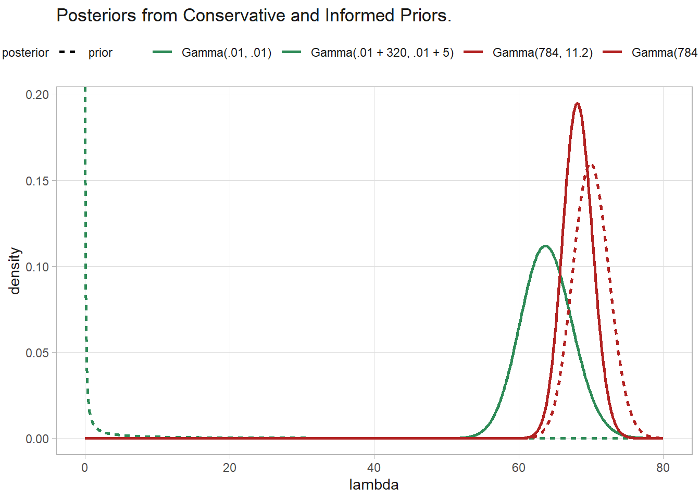

3.4 Gamma Poisson and Estimating Counts
The gamma and Poisson distributions are used to model count data. Consider the following counts of weekday sandwich sales. What is the expected value of sales?
Count data have a Poisson distribution, \(y_i|\lambda \sim Pois(\lambda)\), with expected value \(\lambda\) and PMF \(f(y_i | \lambda) = e^{-\lambda}\frac{\lambda^{y_i}}{y_i!}\). Using Bayes’ Theorem, the posterior distribution of \(\lambda\) given evidence \(\textbf{y}\) is the joint likelihood of \(\lambda\) and \(\textbf{y}\) divided by the likelihood of \(\textbf{y}\).
\[ f(\lambda |\textbf{y}) = \frac{f(\mathbf{y}|\lambda) f(\lambda)}{\int_\Lambda f(\mathbf{y}|\lambda) f(\lambda) d\lambda} \]
The conditional likelihood, \(f(\textbf{y}|\lambda)\), is the sum-product of the Poisson distribution PMF.
\[ \begin{align} f(\textbf{y}|\lambda) = f(y_i,\ldots, y_n | \lambda) &= \prod_i f(y_i | \lambda) \\ &= \prod_i e^{-\lambda}\frac{\lambda^{y_i}}{y_i!} \end{align} \]
The prior distribution, \(f(\lambda)\), should take on only positive values. Model it with the gamma distribution, \(\lambda|a,b = \mathrm{Gamma}(a,b)\).
\[ f(\lambda) = f(\lambda | a,b) = \frac{b^a \lambda^{a-1} e^{-b\lambda}}{\Gamma(a)} \]
where \(\Gamma\) is the gamma function3. Substituting into Bayes’ Theorem and simplifying, you have this nightmare:
\[ f(\lambda |\textbf{y}) = \frac{\lambda^{a + \sum_i y_i-1}e^{-(b+n)\lambda}}{\int_0^\infty \lambda^{a + \sum_i y_i-1}e^{-(b+n)\lambda} d\lambda} \]
However, there is good news. The integration in the denominator removes the dependence on \(\lambda\), so \(f(\lambda |\textbf{y}, a, b)\) is proportional to the numerator up to a constant.
\[ f(\lambda |\textbf{y}) \propto f(\textbf{y} | \lambda) f(\lambda) \]
Since \(f(\lambda |\textbf{y})\) is a PMF, it integrates (sums) to 1 and you can always figure out the constant later. What makes this good news is that this has the form of the PDF of the gamma distribution.
\[ \begin{equation} \lambda | \textbf{y}, a, b \sim \mathrm{Gamma}(a + \sum_i y_i, b + n) \tag{3.1} \end{equation} \]
Equation (3.1) is the posterior distribution of \(\lambda\). We combined a gamma prior with the Poisson likelihood of evidence, \(\textbf{y}\), to produce a gamma posterior. We call priors that produce posteriors of the same form, conjugate priors for the likelihood. Conjugate priors are popular because of their computational convenience.
Return to the sandwich sales data. We need values to plug into Equation (3.1). For the gamma distribution, \(E(X) = a / b\) and \(\mathrm{Var}(X) = a / b^2\). You might guess from intuition that mean daily sandwich sales are 70 +/- 5. Interpreting +/- 5 as a 95% CI and using the rule of thumb that a 95% CI is 2 SD, \(\mathrm{Var} = (2.5)^2 = 6.25\). Solve for \(a = 784\) and \(b = 11.2\). We also have \(\sum_i y_i = 320\) and \(n = 5\).
\[ \lambda | \textbf{y}, a, b \sim \mathrm{Gamma}(784 + 320, 11.2 + 5) \sim \mathrm{Gamma}(1104, 16.2) \]
The posterior \(E(y) = 1104 / 16.2 = 68.1\) and \(\mathrm{Var}(y) = 1104 / 16.2^2 = 4.2\). Use the gamma distribution function to get the posterior 95% credible interval.
# Prior distribution
qgamma(p = c(.025, .975), 784, 11.2)
## [1] 65.18520 74.98392
# Posterior distribution
qgamma(p = c(.025, .975), 784 + 320, 11.2 + 5)
## [1] 64.18701 72.22621Whereas the prior expected mean daily sandwich sales was 70 (95% CI: 65, 75), the posterior is 68 (95% CI: 64, 72). Compare this to classical statistics: \(E(y) = \bar{y} = 64\), \(SE = \sqrt{\bar{y} / n} = 3.6\):
You might think that the reasonable Bayesian outcome was predicated on good \(a\) and \(b\) priors, but no. Suppose \(a = .01\) and \(b = .01\). The posterior is still reasonable.
tibble(
lambda = seq(0, 80, .1),
`Gamma(.01, .01)` = dgamma(lambda, .01, .01),
`Gamma(.01 + 320, .01 + 5)` = dgamma(lambda, .01 + 320, .01 + 5),
`Gamma(784, 11.2)` = dgamma(lambda, 784, 11.2),
`Gamma(784 + 320, 11.2 + 5)` = dgamma(lambda, 784 + 320, 11.2 + 5)
) %>%
pivot_longer(-lambda) %>%
mutate(name = fct_inorder(name)) %>%
mutate(prior = if_else(str_detect(name, "\\+"), "posterior", "prior")) %>%
ggplot(aes(x = lambda, y = value, color = name, linetype = prior)) +
geom_line(linewidth = 1) +
scale_color_manual(values = c(rep("seagreen", 2), rep("firebrick", 2))) +
labs(color = NULL, linetype = NULL, y = "density",
title = "Posteriors from Conservative and Informed Priors.")
The Bayesian posterior approaches the classical \(\bar{y}\) with increasing sample size.
\[ E(\lambda|\textbf{y}, a, b) = \frac{a + \sum_i y_i}{b + n} = \frac{a + n \bar{y}}{b + n} \]
Taking the limit, \(\lim_{n \rightarrow \infty} E(\lambda|\textbf{y}, a, b) = \bar{y}\).
The central credible interval is the standard Bayesian credible interval. But when the posterior distribution is not perfectly symmetric, the shortest credible interval capturing x% of the distribution might have different endpoints. Our example has a pretty symmetric distribution, but let’s calculate the highest density region (HDR) anyway.
pp <- seq(0.01, .99, by = .0001)
x <- map_dbl(pp, ~qgamma(., 784 + 320, 11.2 + 5))
hdrcde::hdr(x, prob = 95)$hdr
## [,1] [,2]
## 95% 64.40786 71.86588The posterior predictive distribution of a predicted value, \(\tilde{y}\) is
\[ f(\tilde{y} | x) = \int f(\tilde{y}|\lambda) f(\lambda | \textbf{y}) d\lambda \]
Our sandwich example has a well defined functional solution: the expected value from \(\mathrm{Gamma}(1104, 16.2)\) is \(1104/16.2 = 68\). Had we not known this, we could have simulated posterior values (Monte Carlo simulation) and calculated the mean and variance. The procedure is to take a random sample of perhaps 1,000 \(\lambda\) values from the gamma posterior distribution, then for each \(\lambda\) draw a single random \(\tilde{y}\) from the Poisson distribution.
a <- 1104
b <- 16.2
set.seed(1234)
# random sample of lambdas, and a single random y_tilde for each lambda
lambda_r <- rgamma(1000, a, b)
y_tilde <- rpois(1000, lambda_r)
# posterior predictive distribution
mean(y_tilde)
## [1] 68.252
quantile(y_tilde, c(.025, .975))
## 2.5% 97.5%
## 50.975 85.000So on any given day, the predicted value of sandwich sales is 68.3 with 95% prediction interval 51.0, 85.0. The probability of exceeding 80 sandwiches, \(P(\tilde{y} > 80 | \textbf{y})\), is mean(y_tilde > 80) = 8.3%, and 99% of the time, sandwich sales will be less than quantile(y_tilde, .99) = 89.
You can also predict individual weekdays. Suppose you take a \(\mathrm{Gamma}(700, 10)\) distribution as your prior.
day_tbl <- tibble(
dow = fct_inorder(c("Mon", "Tue", "Wed", "Thu", "Fri")),
d = c(50, 65, 72, 63, 70)
) %>%
mutate(
post_a = 700 + d,
post_b = 10 + 1,
post_mean = post_a / post_b,
post_lci = qgamma(.025, post_a, post_b),
post_uci = qgamma(.975, post_a, post_b)
)
day_tbl## # A tibble: 5 × 7
## dow d post_a post_b post_mean post_lci post_uci
## <fct> <dbl> <dbl> <dbl> <dbl> <dbl> <dbl>
## 1 Mon 50 750 11 68.2 63.4 73.1
## 2 Tue 65 765 11 69.5 64.7 74.6
## 3 Wed 72 772 11 70.2 65.3 75.2
## 4 Thu 63 763 11 69.4 64.5 74.4
## 5 Fri 70 770 11 70 65.1 75.0What is the probability that Mon sales are less than Tue?
set.seed(123)
lambda_r_mon <- rgamma(1000, 750, 11)
lambda_r_tue <- rgamma(1000, 765, 11)
# posterior probability
mean(lambda_r_mon < lambda_r_tue)
## [1] 0.664Which day of the week has the highest sandwich sales?
set.seed(12345)
lambda_r <- tibble(
r_mon = rgamma(1000, 750, 11),
r_tue = rgamma(1000, 765, 11),
r_wed = rgamma(1000, 772, 11),
r_thu = rgamma(1000, 763, 11),
r_fri = rgamma(1000, 770, 11),
r_dow = pmap(list(r_mon, r_tue, r_wed, r_thu, r_fri),
function(m, t, w, r, f) c(m, t, w, r, f)),
max_dow_idx = map_dbl(r_dow, ~which.max(.)),
max_dow = map_chr(max_dow_idx, ~c("Mon", "Tue", "Wed", "Thu", "Fri")[.])
)
lambda_r %>% janitor::tabyl(max_dow)
## max_dow n percent
## Fri 248 0.248
## Mon 77 0.077
## Thu 188 0.188
## Tue 190 0.190
## Wed 297 0.297Use the Deviance Information Criterion (DIC) to evaluate whether the day means differ from each other.
\[ DIC = p_D + \overline{D(\theta)} \]
where \(p_D = \overline{D(\theta)} - D(\hat{\theta})\) and \(D(\theta) = -2 \log (f(y|\theta)) + C\).
Evaluate \(\overline{D(\theta)}\) by producing samples from each distribution and evaluating the likelihoods of the data based on each realization and taking the mean of -2 log-likelihood.
# Reset the example. Sandwich counts by dow.
y <- c(50, 65, 72, 63, 70)
# Priors
a <- .01
b <- .01
# Posteriors
post <- list(
rgamma(10^3, a+y[1], b+length(y[1])),
rgamma(10^3, a+y[2], b+length(y[2])),
rgamma(10^3, a+y[3], b+length(y[3])),
rgamma(10^3, a+y[4], b+length(y[4])),
rgamma(10^3, a+y[5], b+length(y[5]))
)
# -2 * Mean log-likelihood
ll <-
dpois(y[1], post[[1]], log = TRUE) +
dpois(y[2], post[[2]], log = TRUE) +
dpois(y[3], post[[3]], log = TRUE) +
dpois(y[4], post[[4]], log = TRUE) +
dpois(y[5], post[[5]], log = TRUE)
(mean_D <- mean(-2 * ll))## [1] 34.89608# D(theta-bar) is the likelihood of the data based on the posterior means of p.
(D_mean <- -2 * (
dpois(y[1], (a+y[1]) / (b+length(y[1])), log = TRUE) +
dpois(y[2], (a+y[2]) / (b+length(y[2])), log = TRUE) +
dpois(y[3], (a+y[3]) / (b+length(y[3])), log = TRUE) +
dpois(y[4], (a+y[4]) / (b+length(y[4])), log = TRUE) +
dpois(y[5], (a+y[5]) / (b+length(y[5])), log = TRUE)
))## [1] 29.98793## [1] 4.908155## [1] 39.80424# Repeat these steps for a single model of all groups
post_group <- rgamma(10^3, a+sum(y), b+length(y))
ll_group <-
dpois(y[1], post_group, log = TRUE) +
dpois(y[2], post_group, log = TRUE) +
dpois(y[3], post_group, log = TRUE) +
dpois(y[4], post_group, log = TRUE) +
dpois(y[5], post_group, log = TRUE)
(mean_D_group <- mean(-2 * ll_group))## [1] 35.87018(D_mean_group <- -2 * (
dpois(y[1], (a+sum(y)) / (b+length(y)), log = TRUE) +
dpois(y[2], (a+sum(y)) / (b+length(y)), log = TRUE) +
dpois(y[3], (a+sum(y)) / (b+length(y)), log = TRUE) +
dpois(y[4], (a+sum(y)) / (b+length(y)), log = TRUE) +
dpois(y[5], (a+sum(y)) / (b+length(y)), log = TRUE)
))## [1] 34.81027## [1] 1.059915## [1] 36.9301The DIC for the weekday specific model is 39.8042369 and for the one common group model it is 36.9300995. The DIC for one common group model is smaller, so we do not have enough statistical evidence for two groups.
The gamma function is a generic function, just like sin, cos, etc., and is a kind of generalized factorial.↩︎